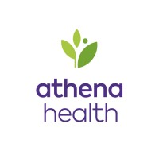

Experience
-
Senior Software Engineer December 2020 - Present 3 years 4 months
Warner Bros Discovery Stockholm, Sweden
Part of the Studio Platform internal dashboard team responsible for automation, deployments, monitoring and alerting, developer experience and guidelines with a team size of 25 developers.
Tech Stack:GitHub Actions, Docker, K8s, React, Typescript, Webpack, AWS, NodeJs, Prometheus, Grafana, Slack & Jira automation, Content Security Policy, Nginx
-

Senior Software Engineer May 2019 - December 2020 1 year 8 months
ComeOn! Stockholm, Sweden
Part of performance optimization and architecture improvement team, we are responsible for improving the web app performance, user experience and developer experience of the application.
Tech Stack: React, Redux, Webpack, AWS Clouldfront, Docker, Express, NodeJs, SASS, WebAssembly, Svelte, Content Security Policy
-

Lead Member of Technical Staff May 2018 - May 2019 1 year 1 month
Athena HealthBangalore, India
Core member of Insights team building Data Visualization Platform dashboard for clients to make dynamic reports.
Tech Stack: React, Redux, D3.js, NodeJs, Docker, Postgres, Jenkins, AWS
-

WalmartLabs Bangalore, India 2 years 2 months
Software Development Engineer III November 2017 - May 2018 7 months
Working with Apparel Planning and Reporting Dashboard for optimizing time, space and cost for apparels in Walmart Stores across the United States.
Tech Stack: React, Redux, Typescript, CSS Animations, NodeJs, React Testing Library, Cypress E2E testing.
Software Development Engineer II April 2016 - October 2017 1 year 7 months
Working with Data Analytics wing of WalmartLabs to develop scalable and performance oriented data visualizations for business decisions using AngularJs and D3js deployed in NodeJs server.
Tech Stack: AngularJs 1.6, CSS3, D3.js, HTML5, NodeJs, Azure Cloud
-

Xerox Services Cochin, India 3 years 8 months
Senior Software EngineerMay 2015 - April 2016 1 year
Working with Buck India Technology Group, Xerox as a Senior Software Engineer I won many awards for UI development of web applications for Fortune 500 clients with stringent deadlines and latest technology requirements.
Tech Stack: AngularJs 1.6, CSS3, HTML5, ASP.net, IIS, SSRS reporting
Software Engineer Sep 2012 - April 2015 2 years 8 months
Working with Xerox as a full stack developer, My keen interest in UI Development and advanced JavaScript find me a spot in a multidisciplinary development team using the latest technologies and continuous learning.
Tech Stack: AngularJs 1.2, CSS3, HTML5, ASP.net, IIS, SSRS reporting